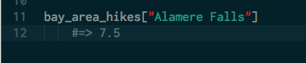
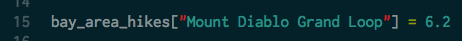
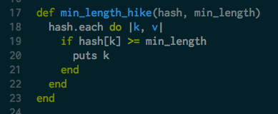

Tech talk: The basics of hashes.
August 30, 2014
Ruby is an object oriented language. This means that everything in Ruby is an object and programs written in Ruby create objects, decide what actions these objects can perform, and decide how these objects interact with other objects. Every object has a class, which is a data structure that groups together objects that have the same behaviors and properties. Ruby allows users to define their own classes but also has several built in classes such as strings, integers, arrays, and hashes.
Before I started learning Ruby, I was familiar with strings, integers, and arrays, but hashes were completely new. What are hashes? The official Ruby Documentation defines a hash as "a dictionary-like collection of unique keys and their values." While arrays are ordered lists where a value is identified by it's index, hashes are un-ordered and values are identified by calling their key. Like arrays, you can use any object type in hashes.
Let's walk through an example to better understand when one would use hashes and how they are implemented in Ruby. I really enjoy hiking and would love a way to keep track of the various trails I hear about in the Bay Area as well as the length of the hikes on each trail. Hashes are the perfect way to do this because they allow you to create a searchable database that ties these two pieces of information together. Here's how we create the hash:

We define the hash called bay_area_hikes and the names of the trails (such as "Mt. Tam") are the keys while the lengths of the hikes (such as 6.7) are the values. If I'm thinking about doing the Alamere Falls hike but want to make sure it's not too long, I can easily pull up the length of the hike by calling:
Hashes are not static so if at any time I decide I don't like a particular hike and want to remove it, I can do so. Likewise, if I want to add a new hike to my collection, I can easily do so. Here's how I would add the Mount Diablo Grand Loop hike, which is 6.2 miles long:
I can also write simple functions that will search the hash for information that I want. For example, let's say I want to be able to find any hikes in my collection that are longer than a minimum length:
The above function takes in a hash of trail name and trail length key-value pairs and minimum length and will return all hikes in the hash that are longer or equal to the minimum length. If I call the function on our bay_area_hikes hash with a minimum length of 7.5, it will return Alamere Falls and Big Basin Waterfall Loop.
Hashes allow us to store information in an organized way that is both easily accessible and searchable. While this was a very basic example, I hope it helps illustrate the power and utility of hashes when are dealing with a collection of data pairs.